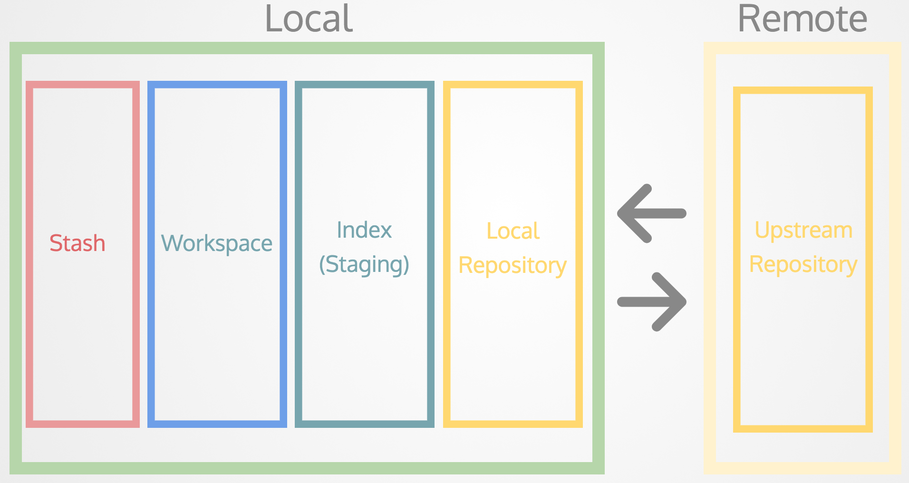

IPR
Git & Frontend Development
Gründe für Versionsverwaltung von Software
- Kollaboration
- Speichern von Versionen
- Wiederherstellen von Versionen
- Backup
VCS Software
- Subversion (SVN)
- Team Foundation Server
- Git

Distributed bedeutet…
…es gibt kein zentrales repository

Was bei GIT Speziell ist
Git Spaces

File lifecycle
File lifecycle

Let's GIT it on!

Zusammenfassung

Git Branching
Merge Konflikte

Zusammenfassung

Remote repositories

Prinzipien hinter Git
- Häufig und früh commiten
- Keine Angst vor Merge-Konflikten
- Aussagekräftige commit Nachrichten
Tools, Links & Software
HTML & CSS Best Practises
SEO: Search Engine Optimization

Responsive Design

Media Queries
See the Pen mMbeBP by Mathias Maciossek (@maciossek) on CodePen.
Frontend Framewoks
Grid System

Grid System Bootstrap

Innerhalb des `<head>` tags:
``` <link rel="stylesheet" href="https://maxcdn.bootstrapcdn.com/bootstrap/4.0.0-alpha.6/css/bootstrap.min.css" integrity="sha384-rwoIResjU2yc3z8GV/NPeZWAv56rSmLldC3R/AZzGRnGxQQKnKkoFVhFQhNUwEyJ" crossorigin="anonymous"> ```Vor dem schließenden `</body>` tag:
``` <script src="https://code.jquery.com/jquery-3.1.1.slim.min.js" integrity="sha384-A7FZj7v+d/sdmMqp/nOQwliLvUsJfDHW+k9Omg/a/EheAdgtzNs3hpfag6Ed950n" crossorigin="anonymous"></script> <script src="https://cdnjs.cloudflare.com/ajax/libs/tether/1.4.0/js/tether.min.js" integrity="sha384-DztdAPBWPRXSA/3eYEEUWrWCy7G5KFbe8fFjk5JAIxUYHKkDx6Qin1DkWx51bBrb" crossorigin="anonymous"></script> <script src="https://maxcdn.bootstrapcdn.com/bootstrap/4.0.0-alpha.6/js/bootstrap.min.js" integrity="sha384-vBWWzlZJ8ea9aCX4pEW3rVHjgjt7zpkNpZk+02D9phzyeVkE+jo0ieGizqPLForn" crossorigin="anonymous"></script> ```Beispiel
See the Pen przjaV by Mathias Maciossek (@maciossek) on CodePen.
SASS, SCSS
Sass makes CSS fun again. Sass is an extension of CSS, adding nested rules, variables, mixins, selector inheritance, and more. It's translated to well-formatted, standard CSS using the command line tool or a web-framework plugin.
Beispielprojekt
https://github.com/maciossek/hft-vl-04-example-1
Übung
- Tutorial Git https://try.github.io
- Legen Sie auf dem Server ein neues Verzeichnis an:
~/public_html/Bootstrap/ - Machen Sie eine Webpage index.html (Inhalt Ihrer Wahl)
Übung
- die Überschriften (<h1>, <h2> und <h3>) die gleiche, fancy Schrift
- Für den Text-Inhalt der Paragraphen ebenfalls eine andere, nette Schrift
- Dieses Design in einer external CSS implementiert
- Bootstrap Navigationsleiste (oben horizontal, links vertikal, wo auch immer)!
- Ein Eingabeformular mit Feldern: Vorname, Name, Emailaddresse und:
- Ein Submit (Grün) / Reset (Orange/Warning) Button